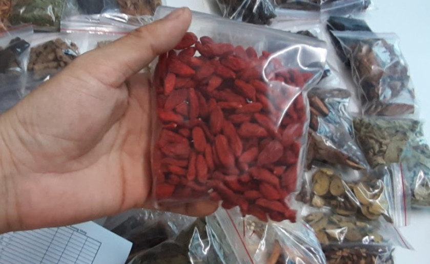

MINH MẠNG THANG¶
Minh Mạng thang là một bài thuốc khá quen thuộc trong Đông y có từ thời vua Minh Mạng. Đây được xem là phương thuốc quý dành cho cánh mày râu tăng cường sinh lực và bồi bổ cơ thể. Trong bài viết dưới đây sẽ cung cấp cho bạn một số thông tin về bài thuốc tác dụng cũng như cách sử dụng hiệu quả nhất.
Tại sao gọi là minh mạng thang¶
Minh Mạng thang là bài thuốc cổ được ghi chép trong rất nhiều tài liệu khác nhau có từ thời vua Minh Mạng đã thất lạc. Cho đến khi Hội Đông y tỉnh Thừa Thiên Huế mất rất nhiều năm nghiên cứu, tìm tòi, ghi chép lại và thấy được một tập tài liệu ghi chép.
Theo lịch sử ghi chép lại, vua Minh Mạng là người rất quan tâm đến Thái Y viên, cũng như chăm sóc cho đời sống tinh thần của mình. Ông có đến hàng nghìn cung tần, mỹ nữ và cho đến 142 người con. Đây cũng là vị vua cho số lượng người con nhiều nhất trong suốt những triều đại của Việt Nam.
Chính vì thế, những bài thuốc bổ, chăm sóc sức khỏe, bồi bổ cơ thể của ông luôn được lưu truyền đến ngày nay và nhiều người áp dụng.
Bài thuốc này chỉ có 22 vị, những tùy vào thể trạng của từng người mà các bác sĩ sẽ cho thêm một số vị thành bài thuốc Minh Mạng thang 35 vị hay 33 vị.
Vậy bài thuốc Minh Mạng thang có tốt không? Sở dĩ có câu hỏi này bởi theo nhiều người cho rằng đây “dâm dược” chứ không phải là thuốc quý. Tuy nhiên, đấy chỉ là quan điểm của những người chưa từng tìm hiểu về Minh Mạng thang.
Trên thực tế bài thuốc này rất bổ ích, chứa nhiều vị thuốc quý hiếm giúp tăng cường sức khỏe, bổ thận, tráng dương, mạnh gân cốt và còn được xem là “thần dược” của nam giới
Thông tin bài thuốc¶
Hiện nay có rất nhiều dị bản khác nhau từ bài thuốc này, nếu như bạn chưa từng tìm hiểu sẽ rất dễ bị lừa, mua nhầm và không mang lại tác dụng như mong muốn.
MINH MẠNG THANG GỒM NHỮNG VỊ GÌ?¶
Hiện nay đơn thuốc được lưu truyền rộng rãi nhất là Minh Mạng thang 33 vị gồm 33 vị thuốc thảo dược thiên nhiên sau:
Dâm dương hoắc
Nấm linh chi
Nhục thung dung
Kỷ tử
Nhân sâm
Đỗ trọng
Ba kích tím
Ích trí nhân
Phá cố chỉ
Thiên niên kiện
11.Thổ phục linh
Thỏ ty tử
Cẩu tích
Cốt toái bổ
Xuyên Khung
Tục đoạn
17.Đẳng sâm
Cam thảo
Hạt sen
Ngưu tất
Bạch thược
Bạch truật
Sinh địa
Quế chi
Ngũ gia bì
Hà thủ ô
Ý dĩ
Mạch môn
Đại táo
Sâm đương quy
Sa sàng tử
Đan sâm
Phục Linh
Kê huyết đằng
Sao biển
Tắc kè
Một số phòng khám y dược sẽ kê Minh Mạng thang 35 vị, hoặc 36 vị vẫn bao gồm 33 vị kể trên và 2 tắc kè. + Đuôi tắc kè là một thành phần tốt trong con tắc kè, có tác dụng rất tốt cho sức khỏe. Cho nên sau khi mua về, bạn cần bảo quản thật cẩn thận để tránh làm mất đuôi tắc kè.
Chúng tôi đã thử nhiều thang không cho tắc kè và sao biển thấy tác dụng thuốc vẫn rất tốt, chính vì vậy không nên quá coi trọng tắc kè và sao biển này.
MINH MẠNG THANG CÓ TÁC DỤNG GÌ?¶
Vậy Minh Mạng thang có tác dụng gì mà lại được nhiều nam giới ưa chuộng sử dụng như thế. Trong đó phải kể đến như:
Hỗ trợ điều trị thận hư, thận yếu và các bệnh lý về thận từ giai đoạn cấp đến mãn tính.
Tăng cường chức năng sinh lý ở nam giới, đặc biệt là những người bắt đầu bước sang giai đoạn trung niên, có tuổi.
Hỗ trợ điều trị một số bệnh về sinh lý nam giới như rối loạn cương dương, xuất tinh sớm, tinh trùng yếu,…
Kích thích lưu thông các mạch máu trong cơ thể, để điều hòa và phân tán nguồn năng lượng ra khớp các cơ quan. Đồng thời tăng lượng máu xuống dương vật và các cơ quan sinh dục để kích thích ham muốn, hưng phấn hơn trong các cuộc yêu cũng như duy trì được thời gian cương cứng dương vật lâu hơn.
Phòng chống bệnh mãn dục sớm ở nam giới, duy trì chức năng sinh lý đến trên 40 tuổi hoặc hơn nữa.
Bồi bổ và chăm sóc cơ thể, tăng cường khí huyết giúp đầu óc, tinh thần thêm minh mẫn, tỉnh táo
Phòng chống bệnh suy nhược cơ thể, tăng cả về chất và lượng của tinh trùng.
Lưu ý: Đây là công dụng chúng của Minh Mạng thang, tuy nhiên, chúng cũng có thể thay đổi tùy vào thể trạng, sức khỏe của từng người cũng như chế độ sinh hoạt và lối sống.
ĐỐI TƯỢNG SỬ DỤNG¶
Mặc dù trước đây Minh Mạng thang được kê dành cho vua sử dụng và mục đích chính là tăng cường chức năng sính lý cho nam giới, tuy nhiên nữ giới vẫn có thể dùng. Chỉ cần là họ ở trong những đối tượng sau đây:
Người bị yếu sinh lý hay suy giảm chức năng sinh lý, giảm ham muốn hay không có cảm giác khi làm “chuyện yêu”.
Người muốn nâng cao chất lượng và ham muốn tình dục, cải thiện tình trạng tinh trùng yếu, xuất tinh sớm ở nam giới.
Người bị suy nhược cơ thể, mệt mỏi do lao động, áp lực tinh thần, cuộc sống.
Người bị bệnh về đường tiêu hóa, hấp thụ và tiêu hóa kém.
Dành cho bệnh nhân bị phong tê thấp.
Người đang mong muốn có con, hiếm muộn cũng có thể sử dụng.
CHỐNG CHỈ ĐỊNH MINH MẠNG THANG¶
Minh Mạng thang là bài thuốc có rất nhiều vị thuốc quý không chỉ có tác dụng sinh lý mà còn tăng cường sức khỏe rất tốt. Tuy nhiên vẫn có một số những đối tượng nhất định không nên sử dụng.
Người bị mẫn cảm hay dị ứng với bất kì một thành phần nào của thuốc.
Phụ nữ đang mang thai hoặc trong giai đoạn cho con bú cũng không được phép sử dụng.
Trẻ em dưới tuổi hay người lớn dưới 30 đang có sức khỏe tốt cũng không nên dùng Minh Mạng thang vì có thể sẽ bị tác dụng ngược.
Người bị cao huyết áp, hay huyết áp không ổn định cũng được chống chỉ định.
Với những người bị dị ứng rượu thì không sử dụng thang thuốc Minh Mạng ngâm rượu
CÁCH NGÂM RƯỢU MINH MẠNG THANG ĐẠT HIỆU QUẢ¶
Bạn có thể sử dụng Minh Mạng Thang ngâm rượu, tác dụng cũng tương tự như sắc thuốc uống. Tuy nhiên, bạn cần tuân thủ đúng theo hướng dẫn, bởi nếu ngâm không đúng cách có thể làm giảm hiệu quả mang lại của các vị thuốc. Cụ thể như sau:
Chuẩn bị:¶
Rượu trắng hoặc rượu nếp khoảng 7.5 – 8 lít.
Bình thủy tinh hoặc chum vại sành để trong quá trình ngâm không gây biến đổi các vị thuốc. Dung tích tối thiểu phải chứa được 10 lít.
Đường phèn: 100gr.
Cách thực hiện:¶
Tất cả các vị thuốc cần được rửa qua một lần với nước lọc để ráo nước.
Cho tất cả vào trong bình, trừ hai vị thuốc là tắc kè và sao biển.
Bạn đổ khoảng 0.5 lít rượu vào tròng bình để thuốc ngấm rượu trong khoảng 30 – 45 phút.
Hai vị thuốc tắc kè và sao biển đem đi nướng khi dậy mùi thì dưng lại.
Sau khoảng thời gian để thuốc ngấm rượu, bạn chắt chỗ rượu đấy ra ngoài và bỏ đi. Đổ nốt chỗ rượu còn lại vào bình cùng 100gr đường phèn.
Dùng nắp đậy thật chặt, không để hở và cất ở nơi tối, không có sự tiếp xúc của ánh sáng mặt trời.
Bạn có thể dùng sau 30 ngày ngâm. Tuy nhiên ngâm càng lâu thì hiệu quả sử dụng càng cao. Thời điểm tốt nhất là từ 6 tháng – 1 năm khi rượu đã ngấm hết những vị thuốc.
CÁCH DÙNG VÀ LIỀU LƯỢNG¶
Cách dùng và liều dùng cũng rất quan trọng. Bạn nên tuân theo đúng khuyến cáo, tránh lạm dụng không mang lại tác dụng như mong muốn còn gây ra những phản ứng phụ.
Liều lượng:¶
Với rượu: 20ml/ lần và mỗi ngày dùng khoảng 2 – 3 lần.
Với thuốc sắc: 500 – 600ml/ ngày (khoảng 1 – 2 bát thuốc)
Cách dùng:¶
Với rượu Minh Mạng thang bạn nên dùng trước bữa ăn chính từ 10 – 20 phút (lưu ý những người bị bệnh về dạ dày thì nên dùng sau khi ăn để tránh ảnh hưởng). Bạn có thể pha thêm một ít mật ong để tăng hương vị và dễ uống hơn hoặc đem chưng cách thủy để giảm mùi cồn.
Với thuốc sắc bạn uống hai thời điểm trong ngày là sáng hoặc tối. Ngoài ra, bạn cũng có thể chỉ cần sắc một bát một ngày để uống cũng được.
Lưu ý: Rượu thuốc Minh Mạng thang sau khi đã sử dụng hết lượt đầu tiên, bạn có thể cho thêm 3.5 lít rượu (loại rượu ban đầu bạn ngâm) vào bình và ngâm tiếp lần 2.
CÁC TOA THUỐC CỦA MINH MẠNG THANG¶
Theo đúng như trong Đông y, bài thuốc Minh Mạng thang được kê thành 2 toa chính là nhất dạ ngũ giao và nhất dạ lục giao. Cụ thể từng toa như sau:
TOA THUỐC NHẤT DẠ NGŨ GIAO¶
Nhất dạ ngũ giao là toa thuốc sử dụng 19 vị thuốc của Minh Mạng thang cùng kết hợp với nhau. Nhiều người còn tương truyền rằng, toa thuốc này còn giúp mang song thai nên được nhiều người lựa chọn sử dụng.
Thành phần:¶
Nhị hồng sâm, táo nhân, đảng sâm, cam cúc hoa, cốt toái bổ, đại táo, sanh địa, xuyên tục đoạn, quảng bì, xuyên đỗ trọng, xuyên ngưu tất, xuyên quy, cam kỷ tử, thục địa, thạch hộc, đan sâm, chích kỳ, xuyên khung, nhục thung dung,
Cách thực hiện:¶
Tất cả các vị thuốc rửa sạch bằng nước lọc và để ráo nước.
Cho tất cả các vị thuốc vào một bình thủy tinh hoặc chum, vại bằng sành, cùng với 5 lít rượu trắng.
Cách 1:¶
Ngâm khoảng 3 – 6 tháng sẽ dùng được.
Mỗi ngày dùng đúng theo liều lượng đã được chỉ định, nếu không uống được rượu thì pha của mật ong hoặc đem chưng cách thủy để giảm mùi cồn.
Cách 2:¶
Rượu được cho vào bình thì để ngâm trong 5 ngày, 5 đêm rồi đổ ra, lấy phần bã đã ngâm rượu nấu với 0.5 lít rượu cùng loại.
Khi sôi thì cho đường phèn vào để rượu thuốc nguội.
Bảo quản cẩn thận trong 10 ngày liên tục là có thể dùng được.
Mỗi ngày dùng 3 lần vào 3 thời điểm để thấy những tác dụng.
TOA THUỐC NHẤT DẠ LỤC GIAO SINH NGŨ TỬ¶
Toa thuốc thứ hai cũng được sử dụng rất nhiều có tên là nhất dạ lục giao sinh ngữ tử sử dụng 24 loại thảo dược của bài thuốc Minh Mạng thang. Thuốc có tác dụng rất tốt trong việc hỗ trợ điều trị và cải thiện tình trạng sinh lý nam giới rất tốt.
Thành phần:¶
Sa sâm, nhục thung dung, cát tâm sâm, vân quy, trần bì, phòng phong, Thục linh, bạch truật, bạch thược, cam thảo, nhục quế, đại táo, tần giao, độc hoạt, tục đoạn, thường truật, đại hồi, đỗ trọng, kỷ tử, mộc qua, cúc hoa, xuyên khung, thục địa, đào nhân.
Cách thực hiện:¶
Tất cả các vị thuốc rửa sạch bằng nước lọc và để ráo nước.
Cho tất cả các vị thuốc vào một bình thủy tinh hoặc chum, vại bằng sành, cùng với 5 lít rượu trắng.
Cách 1:¶
Ngâm khoảng 3 – 6 tháng thì sử dụng được.
Mỗi ngày dùng đúng theo liều lượng đã được chỉ định, nếu không uống được rượu thì pha của mật ong hoặc đem chưng cách thủy để giảm mùi cồn.
Cách 2:¶
Rượu được cho vào bình thì để ngâm trong 7 ngày, 7 đêm rồi đổ ra, lấy phần bã đã ngâm rượu nấu với 0.5 lít rượu cùng loại.
Đun trên lửa nhỏ để liu riu đến khi bớt một chút rượu thì cho đường phèn vào để rượu thuốc nguội.
Bảo quản cẩn thận trong 10 ngày liên tục là có thể dùng được.
Mỗi ngày dùng 3 lần vào 3 thời điểm để thấy những hiệu quả tuyệt vời nhất.
MINH MẠNG THANG GIÁ BAO NHIÊU? MUA Ở ĐÂU¶
Hiện nay minh mạng thang được bán khá phổ biến trên thị trường. Bạn có thể mua tại thảo mộc hht
Tuy nhiên, trong quá trình mua bạn nên tìm đến những địa chỉ mua hàng uy tín, chất lượng để tránh mua phải thuốc giả, trộn, lẫn những vị thuốc khác. Điều sẽ khiến người dùng không cảm thấy những tác dụng như mong muốn.
Giá thuốc Minh Mạng thang không cố định thay đổi tùy thuộc vào: Thời điểm mua, vị thuốc đấy có đang quý hiếm hay phát triển tốt; Tùy vào địa chỉ bán; Tùy vào số vị thuốc mà bạn mua. Mức giá giao động như sau:
Minh Mạng thang 22 vị: 600.000 VNĐ/ 1 thang thuốc.
Minh Mạng thang 36 vị: 700.000 VNĐ/ 1 thang thuốc
LƯU Ý KHI SỬ DỤNG BÀI THUỐC MINH MẠNG THANG¶
Minh Mạng thang là bài thuốc quý rất tốt cho sức khỏe của người dùng nếu biết cách dùng cùng một chế độ ăn uống và lối sống lành mạnh. Một số lưu ý dưới đây sẽ giúp người dùng sử dụng bài thuốc một cách hiệu quả hơn.
Không được tự ý bốc thuốc để uống mà cần đi khám sức khỏe ở các phòng khám Đông y. Các bác sĩ sẽ chẩn đoán đúng tình trạng sức khỏe hiện tại của bạn và đưa ra liều lượng phù hợp nhất.
Tuân thủ đúng theo chỉ định về liều lượng và cách dùng của thuốc, tránh lạm dụng thuốc mà gây nên những biến chứng, hậu quả không đáng có.
Khi sử dụng bài thuốc Minh Mạng thang bạn gặp một số những tác dụng phụ nhất định như dị ứng, đau đầu, chóng mặt thì nên ngưng sử dụng và đến cơ sở y tế để thăm khám.
Với những người bị bệnh về dạ dày, đường tiêu hóa nên chọn phương pháp chưng cất để uống thay vì sử dụng rượu để tránh tình trạng bệnh nặng hơn.
Trong quá trình sử dụng Minh Mạng thang, bạn nên kết hợp cùng một chế độ ăn uống khoa học. Cung cấp vào cơ thể nhiều loại thực phẩm giàu chất xơ, Vitamin và khoáng chất tốt cho cơ thể.
Hạn chế sử dụng những loại chất kích thích, rượu bia, thuốc lá, những loại đồ ăn nhanh, đồ ăn đóng hộp, thực phẩm đông lạnh,… Vì trong những thực phẩm này chứa rất nhiều chất bảo quản và phụ gia, tích tụ nhiều trong cơ thể cũng là yếu tố gây tình trạng suy giảm chức năng sinh lý.
Xây dựng chế độ ăn uống, tập luyện, ngủ nghỉ đúng giờ. Thường xuyên vận động thể dục thể thao, tăng cường sức khỏe những bài tập đơn giản hoặc bộ mộ nhất định.
Trên đây là một số thông tin tổng hợp về bài thuốc Minh Mạng thang – vấn đề được nhiều người quan tâm hiện nay. Hy vọng với những thông tin trên đây giúp bạn hiểu hơn cũng như tin tưởng và sử dụng trong việc chăm sóc sức khỏe hằng ngày.
Video: Minh mạng thang 36 vị năm 2020¶
Tổng hợp các video về minh mạng thang¶
https://www.youtube.com/playlist?list=PLejr7_EdIH0ckym84da8girAdIaybLA6d
Note
Liên hệ Hà Toại - Điện thoại, hoặc Zalo số: 0964.421.551 hoặc 0932.340.345
Địa chỉ: Nhà 23a, Ngõ 137 đường Bát Khối, phường Long Biên, quận Long Biên, Hà Nội
Điện thoại: 0932 340 345